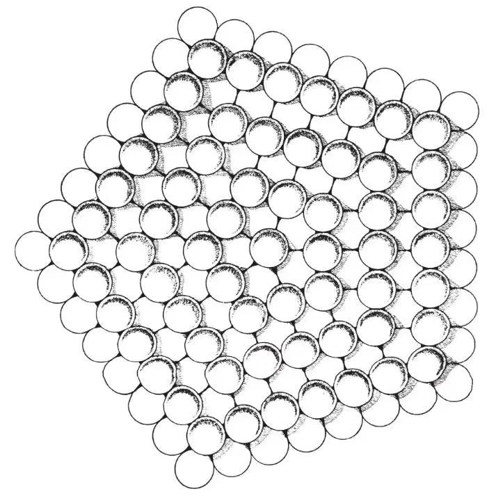

英文
英文巴格利
编者按
根据几何学原理，晶体不能具有五重对称性：做五边形堆积而不产生空隙是不可能的。1984年人们发现一种金属合金具有明显的十重对称性，这一发现似乎是对上述观点的挑战，但是后来发现这个所谓的准晶体缺乏真正的晶体性质。巴格利的这篇文章发表于此前20年，文中他介绍了另外一种利用无限外延密堆积小球而构建出五重对称结构的方法。然而，这种堆积在三维空间中不具有周期性，但是却具有一个明确的中心。第二年，人们在病毒粒子中发现了一个巴格利方案的实例。巴格利还引用了德斯蒙德·贝尔纳提出的、存在于简单液体中的五重对称性团簇结构，而后来这被认为是初期准晶体的晶核。 英文
假定如此构建一个硬球的平面，使若干硬球形成许多同心五边形，且每个五边形边上的硬球数为奇数。而第二个硬球的平面虽也由硬球构成同心五边形，但每个五边形边上的硬球数为偶数。如果将第二个硬球平面与第一个硬球平面紧密接触，且使它们的五重轴一致，这样就形成了一个在层的平面内可以无限连续堆积的硬球层（如图1所示），那么相同的这些层在五重轴一致的方向上可以连续地堆积，这样就可以沿着五重轴的方向形成一个无限堆积。一个无限堆积的结构也因此被构建出来，这个结构的核是由7个球构成的五边形双棱锥体。 英文

图1．一个基于同心五边形堆积序列的硬球层 英文
接着如果将上述五边形的堆积序列换成其他多边形堆积序列，那么我们就可以得到另外一些大家所熟知的结构。例如，正方形按相同序列堆积便可得到立方密堆积[1]，六边形按相同序列堆积则可得到简单的六方密堆积。但是，人们在试图做一个精确的三角形序列时出现了困难，因为在共面上不能形成每边具有偶数（或奇数）个球的同心的三角形。重要的是，在这些多边形中，只有五边形不能形成规则的镶嵌，因此，尽管它能无限堆积，却只具有一个特殊的轴，即唯一的五重旋转轴。 英文
产生相同的五边形结构的另一种方法如下：构建n（n = 1, 2, 3, … ∞）的五边形棱锥的硬球壳层，使它的每个面都是一个边长为n（球）的等边三角形。如果将壳层1置于壳层2的腔体内，结果就形成了一个具有7个原子的五边形双棱锥体。同样，将壳层3置于上述结构上时，它就形成了一个23个球的五边形双棱锥体。实际上，当每个次级壳层置于这种生长的结构上，总可形成一个以密堆积平面为界面的五边形双棱锥体，其中每个面都是边长为n个（壳层数）球的等边三角形。这种五边形双棱锥体是由五个畸变的四面体组成的，它的边平行于向外扩展5.15%的五重轴。每个四面体内都是体心正交晶结构，具有的单胞尺度能使五边形双棱锥体的面可以呈密堆积，且两个相邻的四面体通过重合边界连接在一起。这些条件所产生的体心正交单胞的尺度是（球的直径=1.000）：a=1.000、b=cot36°=1.3764、c=(22−csc236°)1/2=1.0515。因此，这个五边形结构具有的密度值为0.72357，它与位置无关。这个密度比密堆积密度（0.74048）稍低，但高于体心立方堆积（0.68017），或二十面体的壳层堆积（0.68818）（参考文献2）。在距离为1.000时，配位数为10，在距离为1.052时，配位数就为2。这种结构是 型对称性的一个例子，也就是说，在三维中的一维的周期群，其对称群为5mP2ml（尼格利[3]的命名法）。 英文
型对称性的一个例子，也就是说，在三维中的一维的周期群，其对称群为5mP2ml（尼格利[3]的命名法）。 英文
本文描述的对称性结构已在实验中观测到。格德威尔、阿尔特施泰特和韦曼[4]用光学显微镜观测到了由氢还原溴化钴所产生的钴晶体的五重对称性。温托夫[5]也用光学显微镜（外形貌学）观测到了合成金刚石的五重对称性。奥格本、帕雷茨金和派泽[6]用X射线发现了通过电沉积生长的铜[110]枝晶的五角对称性。然而，最显著的例子是梅尔梅德和海沃德[7]利用蒸汽生长出镍、铁和铂的亚微米晶须。这些晶须的直径为50埃~200埃，通过场发射显微镜观测到其具有五重旋转对称性。这种五重对称性不只限于表面，因为在一些铁晶须的连续剥离的过程中，并没有观测到对称性的变化。 英文
在所有这些情况下，该结构都解释为五重孪晶（（111）孪晶平面），即在共同的[110]轴的周围有5个面心立方的晶体，5×70°32′与360°之间的7°20′之差是点阵应变或欠完美性引起的。然而，不同的是孪晶机制未必能产生梅尔梅德和海沃德[7]晶须的小尺寸（50埃~200埃）结构以及在五重轴上的原子完美性。另一方面，五边形双棱锥体晶核的形成以及其随后的生长，也许是这种结构形成的更可能且更简单的机制。而且，如果孪晶机制是造成五重对称性的原因，可以预期在通常的、非五边形的晶须中法向取向应为[110]。这确实符合镍和铂的情况，但在面心立方的铁中观测到的方向却是[100]（参考文献8）。 英文
还应注意到，本文所述结构的五边形核与由贝尔纳[9,10]提出的液体结构的重要组态之一具有相同的形式。从上述讨论中我们可以明显得出，这类组态在生长的过程中能够产生结晶。 英文
我要感谢弗兰克教授、史密斯教授和特恩布尔教授提供的意见，同时也感谢施乐公司提供的科研经费。这项研究的部分工作得到了海军研究办公室（合同为Nonr 1866（50））以及哈佛大学工程与应用物理学院的支持。 英文
（沈乃澂 翻译；赵见高 审稿）